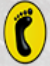

<nav class="navbar fade-in-up">
  
  <div class="navbar-brand" (click)="navigate('/')" role="button" tabindex="0" aria-label="Inicio">
    
    <span class="brand-text font-bold">Clínica del Pie Tijuana</span>
  </div>

  <div class="navbar-links" *ngIf="!isMobileView && esSitioPublico()">
    <a class="nav-link" (click)="navigate('/nosotros')">Nosotros</a>
    <a class="nav-link" (click)="navigate('/servicios')">Servicios</a>
    <a class="nav-link" (click)="navigate('/contacto')">Contacto</a>
  </div>

  <div class="navbar-action" *ngIf="esSitioPublico()">
    <button class="btn-primary" (click)="navigate('/agendar-cita')">Agendar Cita</button>
  </div>

  <div class="mobile-menu-toggle" *ngIf="isMobileView && esSitioPublico()" (click)="toggleMobileMenu()">
    <svg xmlns="http://www.w3.org/2000/svg" width="24" height="24" viewBox="0 0 24 24" fill="none" stroke="currentColor" stroke-width="2" stroke-linecap="round" stroke-linejoin="round">
      <line x1="3" y1="12" x2="21" y2="12"></line>
      <line x1="3" y1="6" x2="21" y2="6"></line>
      <line x1="3" y1="18" x2="21" y2="18"></line>
    </svg>
  </div>
</nav>

<ng-container *ngIf="esSitioPublico()">
  <div class="mobile-menu" [class.active]="isMobileView && mobileMenuOpen">
    <div class="mobile-header">
      <button class="btn-close" (click)="toggleMobileMenu()" title="Cerrar menú">
        <svg xmlns="http://www.w3.org/2000/svg" width="24" height="24" viewBox="0 0 24 24" fill="none" stroke="currentColor" stroke-width="2" stroke-linecap="round" stroke-linejoin="round"><line x1="18" y1="6" x2="6" y2="18"></line><line x1="6" y1="6" x2="18" y2="18"></line></svg>
      </button>
    </div>
    <div class="mobile-links flex-col">
      <a class="nav-link-mobile" (click)="navigate('/nosotros'); toggleMobileMenu()">Nosotros</a>
      <a class="nav-link-mobile" (click)="navigate('/servicios'); toggleMobileMenu()">Servicios</a>
      <a class="nav-link-mobile" (click)="navigate('/contacto'); toggleMobileMenu()">Contacto</a>
      <button class="btn-primary w-full mt-2" (click)="navigate('/agendar-cita'); toggleMobileMenu()">Agendar Cita</button>
    </div>
  </div>

  <div class="overlay" *ngIf="isMobileView && mobileMenuOpen" (click)="toggleMobileMenu()"></div>
</ng-container>